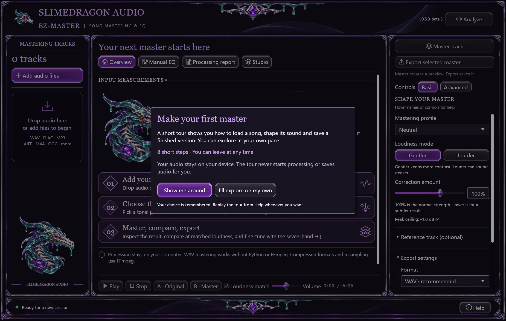
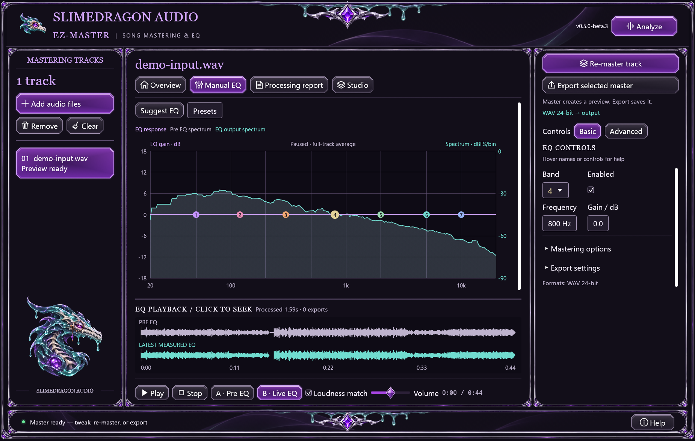
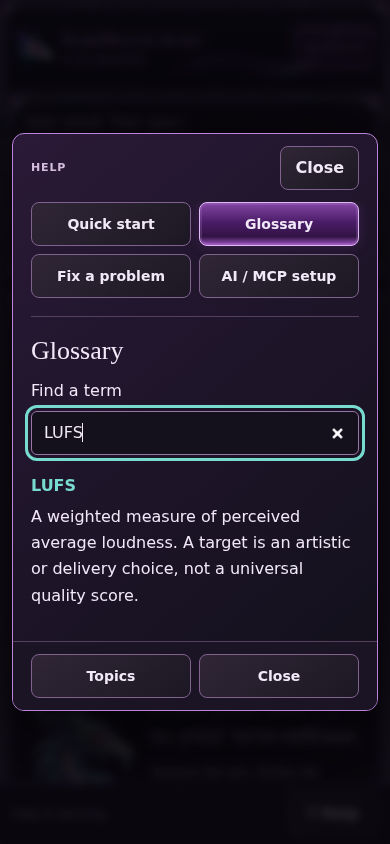

Local song mastering. Real-time EQ. Your music stays yours.
Download the Windows installer or open the beta.3 release page. Start SlimeyBeats-EZ-Master Studio Preview from the Start menu. The installer includes desktop 0.5.0-beta.3 and optional MCP companion 0.2.0-beta.3; the matching browser Studio is 0.3.0-beta.3.
Installation and codec help includes the separate stable v0.4.2 fallback, which has mastering but no Studio or MCP. Linux currently requires a source build.
Choose Show me around for the optional eight-step tour, or I'll explore on my own. Finishing, declining or dismissing saves your choice immediately when storage succeeds. Help can replay the tour whenever you want. The tour never starts processing, downloads a model or saves audio for you.

Basic keeps common choices in view. Advanced reveals detail without resetting audio settings. Notices identify active custom settings whose editors are hidden.
Open bottom-right Help (F1 on desktop) for the tour, plain-language terms, troubleshooting or AI setup. If browser storage is unavailable, a notice explains that choices last only for the current tab; Help and manual replay remain available. Tour, Help and remembered choices.
In compact Overview, Frequency balance · spectrum opens its graph. Manual EQ puts the selected band's controls beside the curve and spectrum. Playback remains available below the scrolling workspace.

Hover control names for help. Gentler/Louder are different loudness intents, not quality scores. Suggested EQ is an editable starting point; Apply curve copies it into the editor. Listening loudness match does not change your export. Full mastering guide.
Open the example listening page, or add examples/audio/demo-input.wav to the app. These WAV files work without extra codecs. The recording is CC0; source and modifications are in its credits. The EQ capture above uses this example; the images show actual app controls.
Imported parts need no model and have no fixed count ceiling. At least two parts must have identical decoded sample rate, channel count and frame count; imports do not align or stretch tracks. Prefer WAV consistently when available. Optional neural separation produces vocal/instrumental or four stems only.
Native defaults allow 512 MiB decoded PCM per input and a separate 4 GiB decoded-bank budget. Processing needs additional RAM, and ZIP/metadata limits also apply. Studio workflow and resource limits.
Choose stem files or a Suno/stem ZIP, review the selected parts and encoding, then import. Use a ZIP with distinct source folders or individual assignments when filenames repeat. Audio stays local. Save/download before closing or reloading the tab.
Browser Studio shares 128 MiB of decoded input across all parts and allows up to 15 minutes per track; ZIPs and decompressed entries also have 128 MiB limits. More tracks share the same budget, and processing needs additional memory. Desktop is better suited to larger banks, subject to its own limits. Neural separation and VST3 hosting are desktop features.

Use bottom-right Help to find an answer or replay the tour without losing your current audio session.
On desktop, open Help → AI setup, choose dedicated audio/export folders, generate the connection example, then copy it into your compatible client's MCP setup. The helper does not change client settings or start a server connection. Connect AI assistant in the Start menu provides a standalone helper.
The optional companion exposes 38 tools. Ask the assistant to prepare a preview so you can listen before an explicit export. Processing is local; the AI client controls metadata sent to its provider. Browser Help explains desktop setup and has no connection bridge. Connection and tool guide.
WAV is native. Compressed inputs, FLAC/MP3 exports and resampling require separate FFmpeg/ffprobe installation. Settings and the default output folder stay beside an ordinary installed Windows copy; choose another export folder if you prefer. Uninstall preserves user data and Examples. Saved preferences do not restore loaded audio or prepared previews; use Save project for Studio work.
The project claims no ownership or royalties in your audio and requires no music credit, watermark or revenue share. Software copies retain MIT notices. Third-party recordings/samples retain their own rights. See the ownership policy and MIT license.